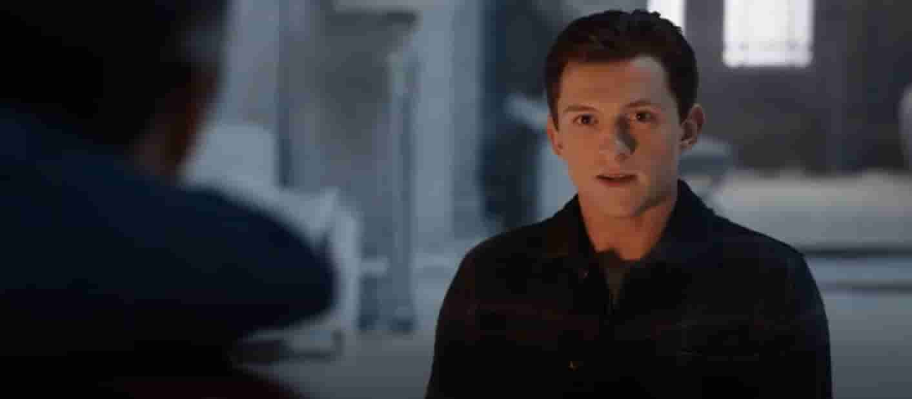
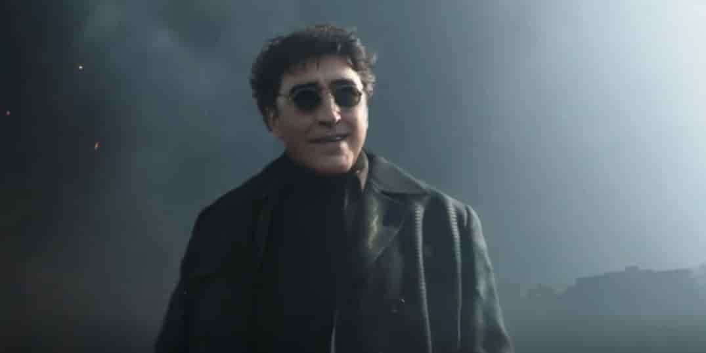
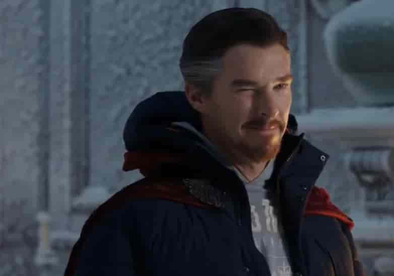

تریلر فیلم مرد عنکبوتی راهی به خانه نیست رکورد بازدید در یک روز را شکست

بامداد سه شنبه بود که سرانجام مارول استودیو و سونی اولین تریلر فیلم مرد عنکبوتی 3 را منتشر کردند و این تریلر یک رکورد تاریخی را ثبت کرده است اولین تریلر فیلم مرد عنکبوتی راهی به خانه نیست رکورد تعداد تماشا یک تریلر در ۲۴ ساعت اول انتشار را شکست این تریلر در روز اول انتشار بیش از ۳۵۵/۵ میلیون بار تماشا شده است این رکورد قبلا با 289 میلیون بار تماشا متعلق به فیلم انتقام جویان پایان بازی بود
این تریلر بیشتر موفقیت های خود رامدیون طولانی شدن زمان انتشار و همچنین تئوری ها و شایعه پراکنی طرفداران است و البته که خود تریلر هم هیجان زیادی برای طرفداران ایجاد کرد و همه را نسبت به این فیلم کنجکاو تر کرد اولین تریلر فیلم مرد عنکبوتی 3 همچنین در شبکههای اجتماعی رکورد پر بحثترین تریلر در اولین روز انتشار را شکسته است. طبق آمار منتشر شده، بیش از ۴/۵ میلیون بار به تریلر این فیلم اشاره شده تا رکورد قبلی را که به فیلم انتقام جویان پایان بازی با ۲/۹۱ میلیون بار اشاره تعلق داشت بشکنداولین تریلر فیلم مرد عنکبوتی راهی به خانه نیست نیز در اولین روز انتشار به آن ۱/۵ میلیون بار در شبکههای اجتماعی اشاره شده بود

فیلم مرد عنکبوتی راهی به خانه نیست برای اکران در تاریخ 17 دسامبر 2021 (26 آذر 1400) برنامهریزی شده است مانند دو قسمت گذشته، جان واتس وظیفه کارگردانی و کریس مککنا و اریک سامرز وظیفه نوشتن فیلمنامه بر عهده داشتهاند تام هالند در نقش پیتر پارکر، جیمی فاکس در نقش الکترو، زندیا در نقش ام جی، بندیکت کامبربچ در نقش دکتر استرنج، آلفرد مولینا در نقش دکتر اوختاپوس ، جیکوب باتالون در نقش ند، مریسا تومی در نقش زن عمو می و جی کی سیمونز در نقش جی جونا جیمسون از جمله بازیگرانی هستند که در فیلم مردعنکبوتی3 حضور دارند و به ایفای نقش پرداختهاند
